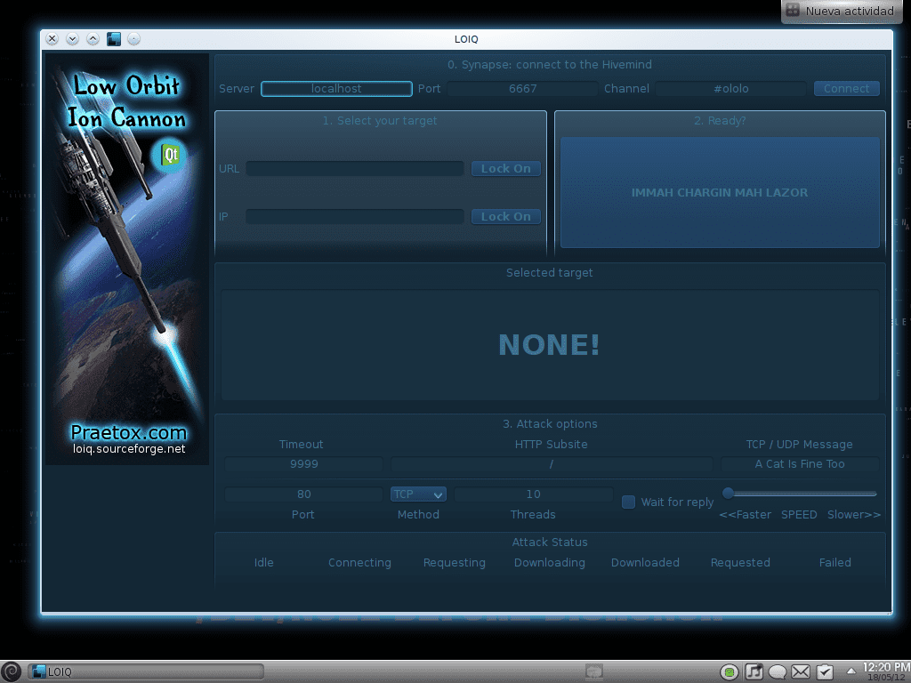
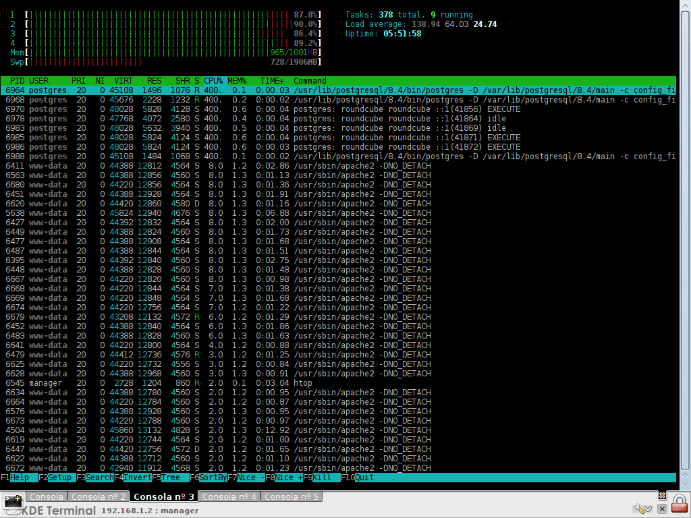

Bem-vindo à área secreta! Aqui você encontrará conteúdo exclusivo e informações sensíveis.
Para acessar a área secreta, você precisa estar logado. Faça login para continuar.
Quem conhece as notícias da internet, notícias ligadas a Anônimo, suas ações, eles saberão que mantiveram sites como o FBI, a CIA, o Departamento de Justiça dos EUA e muitos outros sites importantes (Interpol, Vaticano, etc.) off-line por várias horas… para não tornar a história muito longo Apenas alguns dias atrás a notícia saiu que os administradores do popular site Taringa são acusados e enfrentarão a "justiça" em um julgamento. E ações por Anônimo Eles não esperaram, porque rapidamente ficaram offline (por meio de ataques DDoS) vários sites do governo Argentina. Mas ... O que é um ataque DDoS?
Vou explicar da forma mais simples possível Atacar DDoS significa ataque Negação de serviço. Resumindo, trata-se de acessar milhares de milhares de vezes a um site. Ou seja, se você ou eu entrarmos agora no site X, isso gera uma certa carga (coloca o servidor onde o site está para funcionar) ... 100 ou 1000 pessoas acessando o mesmo site vão gerar uma carga maior que 10, isso é lógico. Bem, os ataques DDoS são equivalentes a centenas de milhares (milhões) de usuários acessando o mesmo site POR SEGUNDO. Ou seja, 100.000 supostos usuários acessam, mas após 1 segundo mais são adicionados ... e mais e mais por segundo. consequências? ... simples, chegará um momento em que a carga de trabalho do servidor (onde está o site) será tanto, mas TANTO, que simplesmente ficará sem RAM, e não poderá fazer mais nada ... e isso meus amigos, fará o o site fica offline.
entei explicar da forma mais simples possível hahaha. É por isso que talvez quem tem mais conhecimento saiba que encontrará algum erro ou detalhe ocasional que foi excluído, peço desculpas por isso Agora, aqui vou te ensinar como fazer esses ataques DDoS, usando uma ferramenta desenvolvida pelo mesmo Anônimo: LOIQ.
Sim existe LEI, Significado Canhão de Íon de Órbita Baixa, e pode ser usado no Windows, Mac ou Linux. O problema é que para usá-lo no Linux, você precisa instalar o Wine e neste (no Wine) o Windows Net.Frameworks. Ou seja, para fazê-lo funcionar no Windows, você precisa emular o LEI (.exe) em nossa distro. Outra forma (que não tentei) é usar as bibliotecas Mono. Eu pessoalmente não gosto de nenhuma dessas duas alternativas. Eu realmente não gosto de usar o Wine e realmente odeio Mono ¬_¬ ... então o que fazer neste caso? Felizmente, existe uma versão de LEI chamada LOIQ (mudar de C para Q) escrito em C++… e usa bibliotecas Qt
Basta colocar ... Nós apenas descemos um .tar.gz, descompactamos e apenas rodamos o arquivo loiq e o BINGO !! temos LOIQ (que é o mesmo que LEI) aberto em nossa distro e pronto para uso … ou!! …eles podem simplesmente instalar um . Deb e é isso
Aqui estão os links para download: LOIQ (Canhão de íons de baixa órbita em C ++ e Qt) - "Arquivo .DEB LOIQ (Canhão de íons de baixa órbita em C ++ e Qt) - "Arquivo .tar.bz2 Eu uso diretamente o .tar.bz2, pois assim evito ter que instalar outro pacote como tal no meu sistema. Ou seja, para executá-lo, faço o download do .tar.bz2, descompacto e executo. Vou deixar um comando que fará o seguinte: Baixe o pacote .tar.bz2 Descompacte-o. E vai permitir que você simplesmente digite em um terminal «loik»(Sem as aspas) execute o aplicativo para eles. cd $HOME && wget http://ftp.desdelinux.net/loiq-0.3.1a.tar.bz2 && bzip2 -dc loiq-0.3.1a.tar.bz2 | tar -xv && mv loiq-0.3.1a .loiq-0.3.1a && sudo ln -s $HOME/.loiq-0.3.1a/loiq /usr/local/bin/ Será solicitada a senha deles, eles a escrevem e pressionam [Entrar], e é isso, nada mais Abra outro terminal e digite «loik»(Sem as aspas) e pressione [Entrar], o seguinte deve aparecer:

E isso é LOIQ ... que não é nem mais nem menos que LEI mas para Linux, usando bibliotecas Qt. Para fazer um ataque (vou fazer um teste com um servidor interno do meu trabalho), no 1º campo onde diz URL colocamos o domínio (por exemplo, server.domain.com), ou se soubermos o IP podemos colocar isso no campo abaixo, aquele que diz IP. Assim que os dados forem escritos em um desses dois campos, pressionamos o botão à direita do campo que diz «Trancar«. Em seguida, mais abaixo e no centro diz 10 e abaixo «Tópicos«, Aumente para qualquer número, colocarei 100. Este número será o número de pacotes / pedidos que serão feitos, e ao lado de (acima de onde diz Método), selecionamos HTTP na lista suspensa. Eles têm muito mais opções, tempo limite, diretório que desejam atacar, etc. etc. Já que estamos fazendo apenas um teste, vamos deixar por isso mesmo. Deixo a captura de tela de como ficou para mim:
E então, uma vez que os dados estão dentro ... eles simplesmente pressionam o botão maior, aquele com muitas letras estranhas hahaha (diz: IMMAH CHARGIN MAH LAZOR) … e o ataque começa Vou fazer aqui, e em menos de 5 segundos o servidor que estou atacando (lembro, um servidor daqui do trabalho) terá quase 100% da RAM ocupada, e as CPUs no máximo ... veja:

Como vocês podem ver ... 4CPUs (físicos, não virtuais), e 2GB de RAM foram para o chão, servidor offline, nenhum site dos que estavam ali abertos, serviço POP3, serviço IMAP, foi colocado tudo offline, porque o servidor não tinha mais recursos para responder às solicitações feitas. E lembre-se, isso só foi feito por 1 pessoa (eu, um único LOIQ / LOIC) e com apenas 100 solicitações ... Você pode imaginar mais de 3000 pessoas fazendo ataques DDoS no mesmo servidor? (figura real ...) … o que foi dito, até a CIA e o FBI sucumbiram Esclareço que este tutorial é com FINALIDADE EDUCACIONAL!! O objetivo de colocar este tutorial é que apenas algumas horas após a publicação, colocaremos outro tutorial no iptables e como obter proteção contra DDoS. É exatamente por isso que colocamos este tutorial Outras informações a ter em conta ... Se você vai fazer DDoS (o que eu não digo para você fazer hahaha), recomendo que primeiro leia o Guia de segurança anônimo, lá eles explicam sobre VPN e outros. No fim. Espero que você esteja bem e não use isso para fins prejudiciais... não deixe o lado negro absorver você lembranças
http://github.com/uranio-235/scripts/blob/master/bash/blackpostfix.sh
https://github.com/neweracracker/loic/releases
mira prueba este escript que escribi ahi a lo loco debe funcionar en el cron, una vez al dia por lo menos se llama postfixblack.sh, ponle el ejecutable chmod +x postfixblack.sh y correlo, especificando al ruta completa en el cront OJO, la lina del for es una sola linea larga, empieza en donde dice "for ip" y termina donde dice "; do" Deja ver si hacho a andar mi cuenta de github pa subirtelo... La cadena de la lista negra debe ser renovada al menos una vez al dia, ya que hinet Usa ip dinamicas.... ***@leviatan:~$ cat postfixblack.sh #!/bin/sh echo 'refrescando la lista negra de postfix' # recreamos la cadena iptables -X blacklist iptables -N blacklist # le decimos que es del tipo INPUT iptables -I INPUT -j blacklist # por cada ip que se desconecte de hinet for ip in $(cat /var/log/mail.log |grep 'disconnect from'|grep hinet|sed s/'\['/' '/g|sed s/'\]'/' '/g|awk {'print $11'}); do iptables -I blacklist -s $ip -j DROP echo $ip baneada done # EOF ...